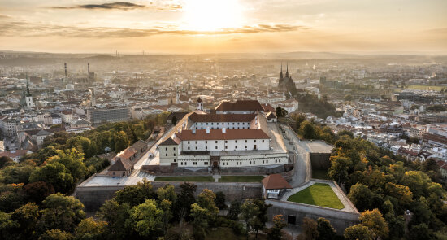

Brno oder auf Deutsch Brünn ist die zweitgrößte Stadt in Tschechien und liegt im Südosten des Landes. Die Stadt ist die Hauptstadt der Region Mähren. Sie liegt an zwei Flüssen: der Svitava und der Svratka. Brno hat eine lange Geschichte, die vor über 750 Jahren begann. Früher war die Stadt ein wichtiges Zentrum für den Handel, heute ist sie modern und bekannt für Technik, Wissenschaft und Kultur.
In Brno leben rund 400.000 Menschen. Weil es hier viele Universitäten mit über 80.000 Studenten gibt, ist die Stadt sehr jung und lebendig. Brno ist außerdem bekannt für sein großes Messegelände, viel Kunst und tolle Gebäude. Das berühmteste Haus ist die Villa Tugendhat. Sie wurde von einem bekannten Architekten gebaut und gehört heute zum UNESCO-Weltkulturerbe.
Die Stadt hat eine sehr gemütliche und offene Atmosphäre. Hier gibt es für jeden etwas zu tun: Du kannst gemütliche Weinkeller besuchen, Jazz-Musik hören oder einfach mit dem Fahrrad an den Flüssen entlangfahren. Brno ist eine Stadt, die man einfach selbst erleben muss!
1021–1034
In dieser Zeit wird die erste Burg gebaut. Sie gibt der späteren Stadt ihren Namen: Brno.
1091
Die Siedlung Brno wird in diesem Jahr zum allerersten Mal in einer alten Urkunde schriftlich erwähnt.
1243
König Wenzel I. gründet Brno offiziell als königliche Stadt. Damit gehört sie fest zum Königreich Böhmen.
1277
Die berühmte Festung Spielberg (Špilberk) wird in einem Dokument zum ersten Mal als Burg erwähnt.
1349
Brno steigt auf und wird der offizielle Sitz der mächtigen Markgrafen von Mähren.
1641
Große Veränderung: Brno löst die Stadt Olmütz ab und wird die neue, offizielle Hauptstadt von Mähren.
1643 & 1645
Die schwedische Armee belagert Brno gleich zweimal. Doch die Einwohner verteidigen ihre Stadt beide Male erfolgreich.
1742
Im Ersten Schlesischen Krieg marschieren preußische Soldaten bis kurz vor die Tore der Stadt.
1805
Ganz in der Nähe findet die berühmte Schlacht bei Austerlitz statt. Kaiser Napoleon I. besucht Brno in diesem Jahr zweimal persönlich.
1809
Napoleon besucht die Stadt ein drittes Mal. Er befiehlt, die alten Stadtbefestigungen zu zerstören. Sie verlieren damit ihre Schutzfunktion.
1839
Die neue Zugverbindung zwischen Brno und Wien wird eröffnet. Das ist ein riesiger Meilenstein für den Verkehr im damaligen Kaiserreich Österreich.
1860 / 1861
Die alten Stadtmauern werden komplett abgerissen. Stattdessen entsteht eine große, schicke Ringstraße mit schönen Parks und Gebäuden, ähnlich wie in Wien.
Um 1900
Die Mehrheit der Menschen in der Stadt spricht Deutsch. Weil Tschechen und Deutsche zusammenleben, entsteht der berühmte Brnor Dialekt „Hantec“ – eine Mischung aus beiden Sprachen.
1939
Die Nationalsozialisten besetzen das Land. Es folgt eine schreckliche Zeit, in der fast die gesamte jüdische Bevölkerung aus Brno verschleppt und ermordet wird.
1945
Nach dem Krieg wird fast die gesamte deutschsprachige Bevölkerung gewaltsam vertrieben. Rund 27.000 Menschen müssen zu Fuß zur österreichischen Grenze marschieren; Tausende sterben dabei. (Hinweis: Im Jahr 2015 hat sich die Stadt Brno offiziell für diese Vertreibung entschuldigt).
1949
Mähren wird als politische Region aufgelöst und Brno verliert den Titel der Landeshauptstadt. In den nächsten Jahrzehnten wächst sie zu einer großen Industriestadt heran. Am Stadtrand entstehen viele typische Plattenbauten.
1993
Große Ehre für die Stadt: Ein neu entdeckter Asteroid im Weltall wird offiziell nach ihr benannt und heißt seitdem (2889) Brno.
1998
In Brno wird die allererste Moschee in der gesamten Tschechischen Republik gebaut.